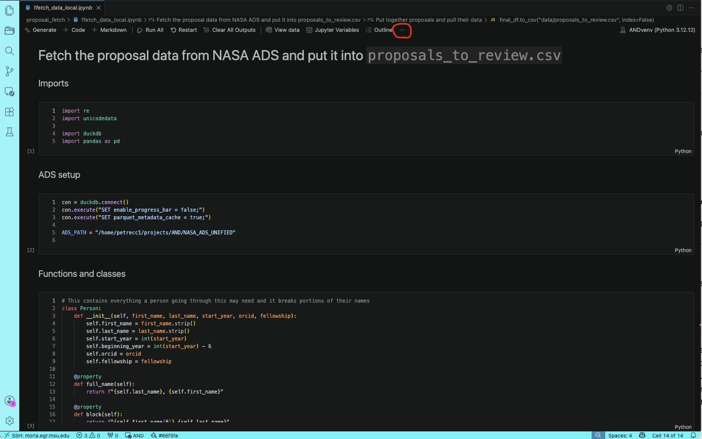
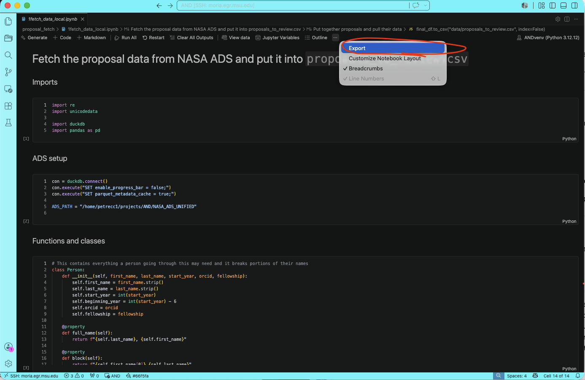
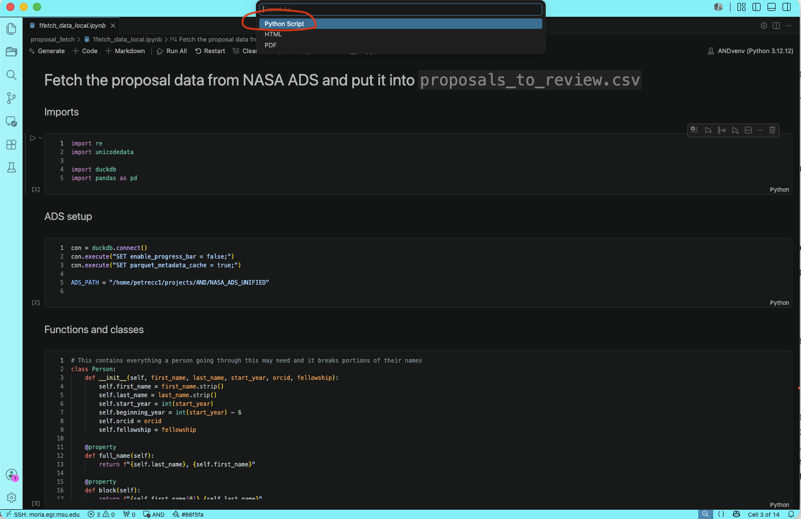
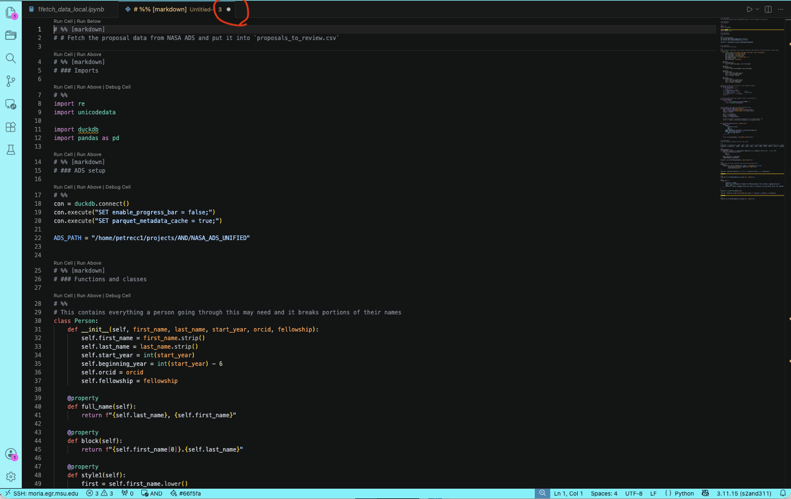

Jupyter notebooks are great for exploration, but they are not necessarily ideal for long-running jobs on remote machines. If you close your laptop, lose connection, or disconnect from Moria, the notebook may stop running.
For long jobs, the safer workflow is:
Use the notebook to explore and make sure the code works.
Turn the notebook into a normal Python script.
Run the script inside tmux so it survives disconnects.
This lets the code keep running even if you disconnect.
Export a notebook to a Python script
In VS Code, open the notebook you want to run.
Click the three dots at the top of the notebook.

Click Export.

Choose Python Script.

VS Code will create a .py version of the notebook. You
may see a white dot on the file tab, which means the file has
unsaved changes. Save the file before running it.

Run the script in tmux
This is detailed in the tmux section, but simplified here. Once the
Python script is saved, start a tmux session:
tmux new -s myjobThen run the script:
python your_script.py
To leave it running, detach from tmux:
Ctrl + b, then dLater, reconnect with:
tmux attach -t myjob.py script inside tmux, not directly as a
notebook.
Optional: using Gather
Sometimes you do not want to run the entire notebook. You only want to run one important cell and the cells needed to make that cell work.
The Gather extension from Microsoft can help with
this. It collects the selected cell and the cells that it depends
on into a new notebook. Then you can export that smaller notebook
to a Python script and run it in tmux.
The workflow is:
- Use Gather to collect the needed notebook cells
- Export the gathered notebook as a Python script
- Save the script
- Run it inside
tmux
This is helpful when your original notebook has lots of exploratory cells that you do not want to rerun.